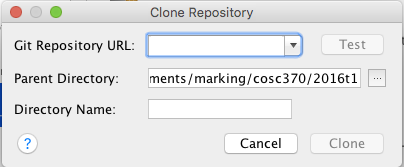

COSC370/570 Sample app
In UNE's User Experience and Interaction Design course, students work on designing, prototyping, and creating a mobile app through term. One of the options for developing your app is Android Studio, and so this is where we keep our notes (and a sample app) for students to check they have Android Studio set up and working.
(Note, you can also use iOS, Unity, or React-Native, though we have not yet set up sample apps and resources for those.)
Resources
-
Android Studio, from Google
They have very extensive documentation -- we're not going to try to replicate all that, but we'll give some introductions and shorter summaries as we want to get you up and running quickly -
Sample app
There are many sample apps out there to download and try, but it's useful for us to have one that we can point you to. -
Gradle, which does the building.
Android Studio is the development environment, but behind the scenes it uses Gradle to build projects. Gradle makes it very easy, for instance, to include a library (eg, a Java physics library) in your app. You tell it the library you want, and it goes and gets it for you. Gradle also has extensive documentation, and intro videos.
Getting set up
-
Install Android Studio
First, download and install Android Studio. If you want to check that the IDE itself is working, have a look at their workflow steps, which include creating a sample app using their wizard.
However, ideally we'd like to get you working with version control (so you can share your code with course staff if you have a problem), so we've also put a sample app onto GitHub for you to download and try...
-
Clone the sample app
From the Android Studio welcome screen, pick Check out project from Version Control and choose Git. This should pop up a little window that looks like this:

The repository URL is https://github.com/UNEcosc370/sampleAndroidApp.git.
Instructions still in progress...